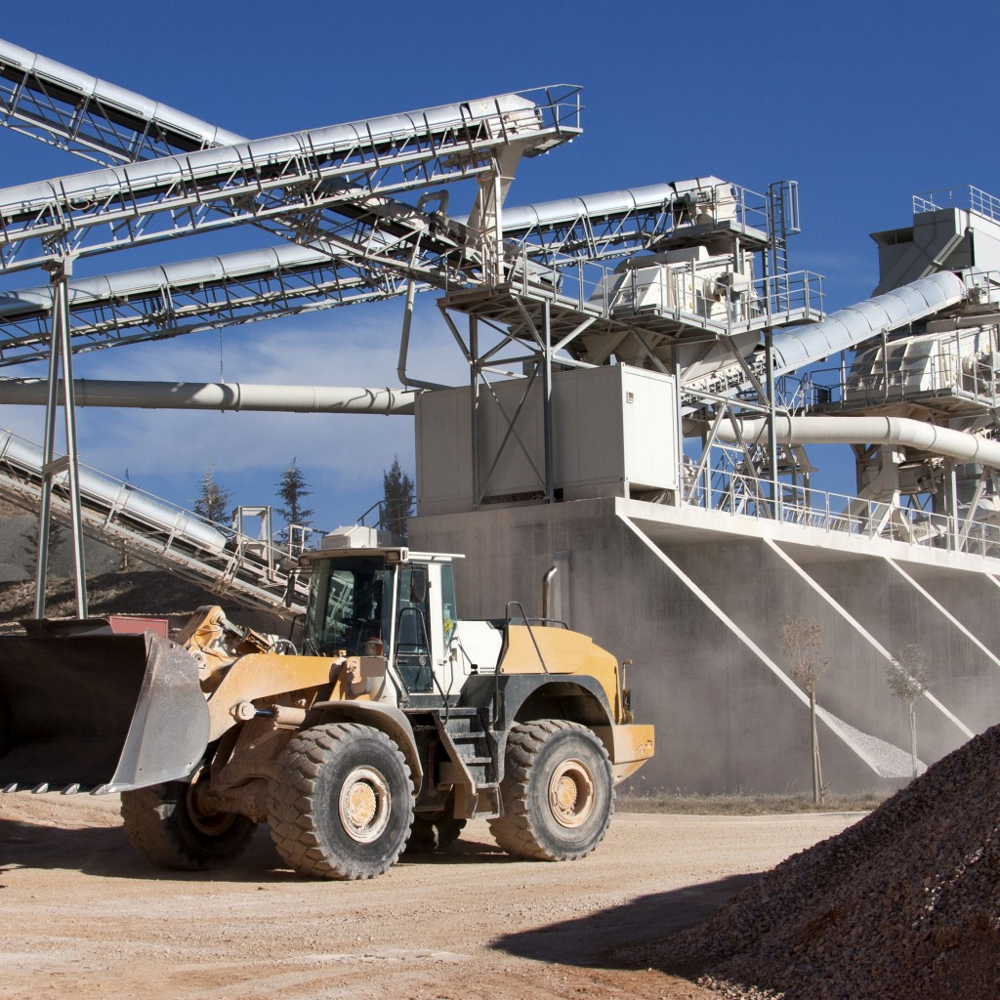
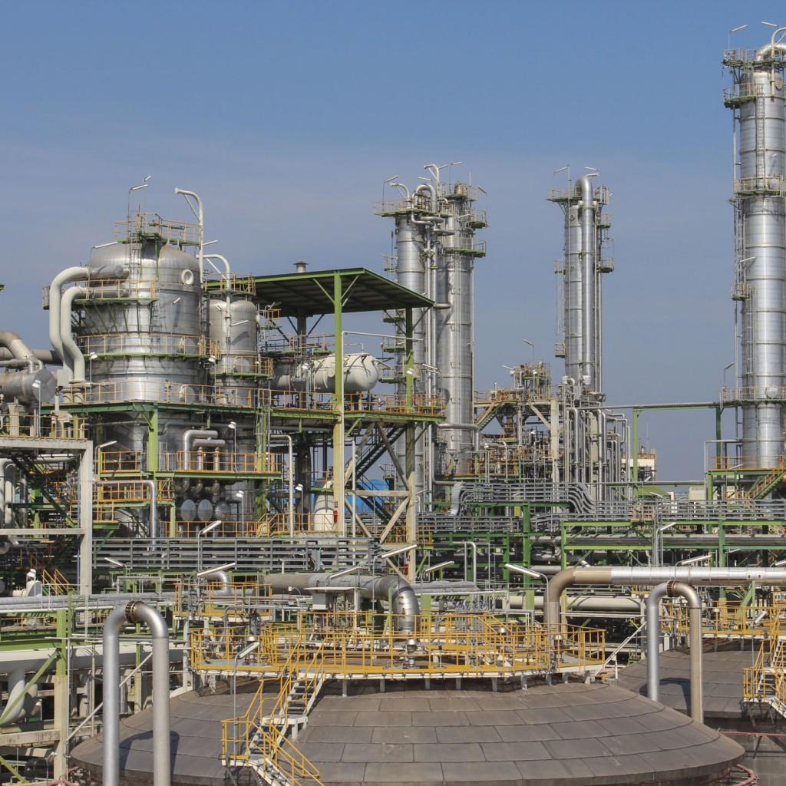
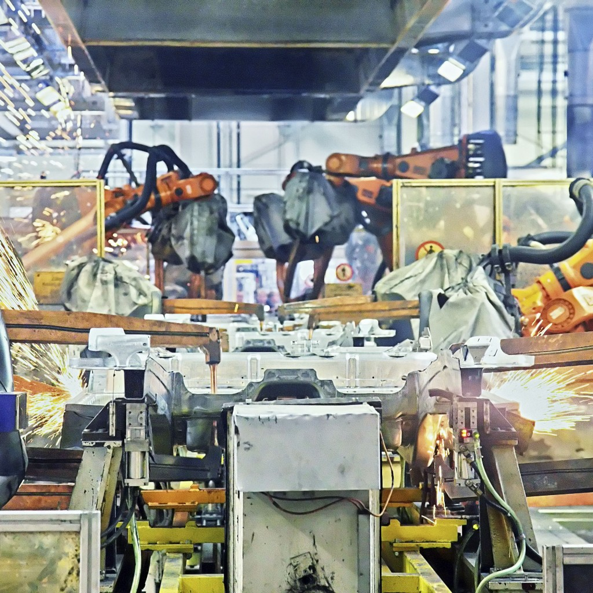
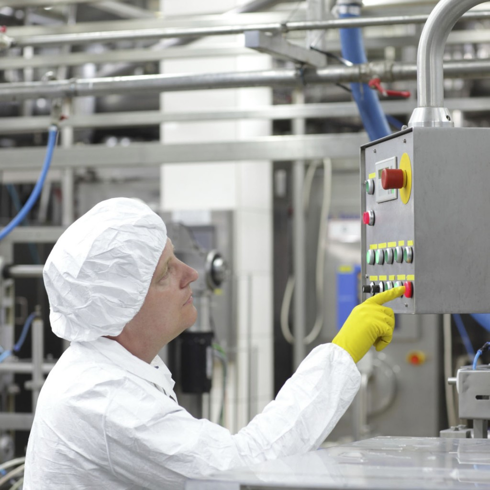

För över 25 år sedan uppfann vi vår metod för hantering och genomförande av underhåll. Sedan dess har vi arbetat hårt med många kunder i många branscher, på ledningsnivå och på verkstadsgolvet, för att hjälpa dem att förverkliga sin fulla potential inom underhåll och skapa långsiktig affärsnytta.
Även om vi kan arbeta i alla branscher där underhållet innebär en betydande kostnad finns våra kunder oftast inom nedanstående branscher:

Massa- och pappersindustrin
I årtionden har vi varit en av de mest betrodda underhållspartnerna för massa- och papperstillverkare världen över. Vi ansvarar fullt ut för underhållet av många produktionslinjer, bland annat på några av världens mest framgångsrika och största pappersbruk. Vi har möjlighet att utveckla och implementera vår underhållsmetodik på hela anläggningen så att både kapital och driftskostnader optimeras, vilket skapar långsiktigt hållbara resultat som vi kan vara stolta över.
”Quant har gett vår underhållspersonal bättre förutsättningar och skapat en kultur av prestation och ansvarstagande.”
Platschef, massa- och papperstillverkare, Nya Zeeland
”Sedan Quant tog över underhållshanteringen har anläggningens produktion överträffat sitt tidigare rekord med mer än 5 000 ton, vilket är fenomenalt med tanke på utrustningens ålder.”
Chef, massa- och papperstillverkare, Australien
Gruv- och mineralindustrin
Vi förstår de unika underhålls- och affärsutmaningarna inom gruv- och mineralindustrin. De tuffa miljöerna och ett kompromisslöst fokus på säkerhet, driftsäkerhet och effektivitet gör att underhållsrutiner i världsklass är avgörande. Vi har många års erfarenhet av att arbeta för några av de ledande företagen i branschen och vi har visat att vi kan skapa betydande, varaktiga mervärden i både nya och befintliga anläggningar.


Metallindustrin
Vi har lång erfarenhet av underhållsoutsourcing inom metallindustrin, främst inom aluminium- och kopparsmältverk, järn- och stålverk och nickelraffinaderier. Vårt fokus ligger normalt på att förbättra avkastningen på sysselsatt kapital (ROCE), där det viktigaste är att öka tillgängligheten och minska kostnaderna.
Kemi – och petrikemiindustrin
Vi är en pålitlig global tjänsteleverantör till kemi- och petrokemiindustrin. Vi har anlitats för outsourcing och hantering av underhåll av fler än 40 fabriker under de senaste två decennierna, både inom nyetablerade och befintliga projekt. Våra processer, verktyg och resurser är anpassade för att möta branschens unika behov.


Diskret Tillverkning
Vi erbjuder outsourcing av underhåll för ett brett spektrum av företag inom diskret tillverkning, där varje linje och produkt, ständiga produktionsökningar och -minskningar samt omställningar kräver särskild uppmärksamhet från motiverade, snabba och flexibla proffs.
Livsmedelindustrin
Vi erbjuder ett komplett utbud av underhållsoutsourcingtjänster som hjälper beslutsfattare inom livsmedelsindustrin att minska energiförbrukningen och spillet samt hantera utrustning och processer mer effektivt.


Bensinstationer
I flera länder har vi en organisation för att hantera totalunderhållet av faciliteter och teknisk utrustning för rikstäckande nätverk av bensinstationer. Vårt centrala callcenter tar emot alla serviceärenden från bensinstationernas personal och tilldelar dem till närmaste underhållsteam för omedelbar åtgärd, när och var som helst.
Olje- och Gasindustrin
Som en erfaren leverantör till olje- och gasindustrin, och genom att ständigt utveckla de tjänster vi erbjuder anläggningar både uppströms och nedströms, har vi en unik position för att möta branschens ständigt föränderliga krav.
Våra processer, verktyg och resurser är anpassade för att uppfylla branschens specifika behov och har visat sig skapa påtagliga värden för kunder över hela världen.


Allmännyttiga tjänster
Förutom att tillhandahålla underhållstjänster för många allmännyttiga företag, bland annat kraftverk för konventionell och förnybar energi, gör vår avancerade kunskap om automation, instrumentering och styrsystem att vi kan gå bortom det rena underhållet och ta ett helhetsansvar för driften av anläggningar.